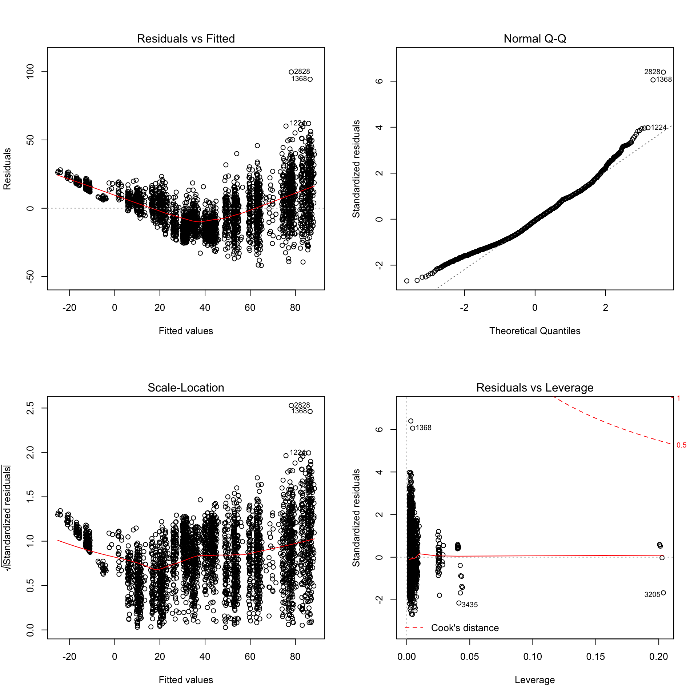

regression
Weijia Xiong
12/1/2019
data_2018 =
read_csv("./data/2018data.csv") %>%
janitor::clean_names() ## Parsed with column specification:
## cols(
## .default = col_character(),
## TIME = col_time(format = ""),
## `ZIP CODE` = col_double(),
## LATITUDE = col_double(),
## LONGITUDE = col_double(),
## `NUMBER OF PERSONS INJURED` = col_double(),
## `NUMBER OF PERSONS KILLED` = col_double(),
## `NUMBER OF PEDESTRIANS INJURED` = col_double(),
## `NUMBER OF PEDESTRIANS KILLED` = col_double(),
## `NUMBER OF CYCLIST INJURED` = col_double(),
## `NUMBER OF CYCLIST KILLED` = col_double(),
## `NUMBER OF MOTORIST INJURED` = col_double(),
## `NUMBER OF MOTORIST KILLED` = col_double(),
## COLLISION_ID = col_double()
## )## See spec(...) for full column specifications.newnames = colnames(data_2018) %>%
str_replace("number_of_","")
names(data_2018) = newnames
tidy_data =
data_2018 %>%
mutate(
date_complete = date
) %>%
separate(date, into = c("month", "day", "year"), sep = "/") %>%
separate(time, into = c("hour", "minute"), sep = ":") %>%
select(-zip_code, -location, -on_street_name, -cross_street_name, -off_street_name,-collision_id,-year) %>%
rename("vehicle_type" = "vehicle_type_code_1",
"cause" = "contributing_factor_vehicle_1") %>%
mutate( day = as.numeric(day),
month = as.numeric(month),
hour = as.numeric(hour),
minute = as.numeric(minute),
latitude = replace_na(latitude,0),
vehicle_type = str_to_lower(vehicle_type)
) %>%
filter( latitude != 0) %>%
drop_na(borough)Weather data
climate_df =
read_csv("./large_data/climate.csv") %>%
janitor::clean_names() %>%
select(date,hourly_dry_bulb_temperature,hourly_precipitation,daily_weather) %>%
separate(date, into = c("date", "time"), sep = " ") %>%
mutate(
date = as.Date(date)
)## Parsed with column specification:
## cols(
## .default = col_double(),
## DATE = col_datetime(format = ""),
## REPORT_TYPE = col_character(),
## BackupDirection = col_logical(),
## BackupDistance = col_logical(),
## BackupDistanceUnit = col_logical(),
## BackupElements = col_logical(),
## BackupElevation = col_logical(),
## BackupElevationUnit = col_logical(),
## BackupEquipment = col_logical(),
## BackupLatitude = col_logical(),
## BackupLongitude = col_logical(),
## BackupName = col_logical(),
## DailyPeakWindDirection = col_character(),
## DailyPrecipitation = col_character(),
## DailySnowDepth = col_character(),
## DailySnowfall = col_character(),
## DailySustainedWindDirection = col_character(),
## DailyWeather = col_character(),
## HeavyFog = col_logical(),
## HourlyPrecipitation = col_character()
## # ... with 29 more columns
## )## See spec(...) for full column specifications.all_day_weather_df =
climate_df %>% filter(time == "23:59:00") %>%
distinct(date,daily_weather) %>%
filter(!duplicated(date)) %>%
separate(daily_weather, into = c("weathertype", "other"), sep = 2) %>%
mutate(
weathertype = recode(weathertype,
"SN" = "snow",
"HZ" = "haze",
"RA" = "rain",
"FG" = "fog",
"BR" = "mist"
),
weathertype = replace_na(weathertype,"sunny")) %>%
select(-other)
daily_weather_df =
climate_df %>%
separate(time, into = c("hour", "minute","second"), sep = ":") %>%
separate(date, into = c("year","month", "day"), sep = "-") %>%
separate(hourly_precipitation, into = c("prep","other"), sep = 4) %>%
select(-minute,-second,-year,-daily_weather,-other) %>%
mutate(
month = as.numeric(month),
day = as.numeric(day),
hour = as.numeric(hour),
prep = replace_na(as.numeric(prep),0)
)Light data
light_data =
read_csv("./large_data/whole_accident.csv") %>%
select(-X1)## Parsed with column specification:
## cols(
## X1 = col_double(),
## day = col_double(),
## month = col_double(),
## borough = col_character(),
## num_accident = col_double(),
## num_signal = col_double()
## )Vehicle data
vehicle_type_data =
tidy_data %>%
mutate(
vehicle_type = replace(vehicle_type,str_detect(vehicle_type,"truck"),"truck"),
vehicle_type = replace(vehicle_type,str_detect(vehicle_type,"sport utility"),"sport utility vehicle"),
vehicle_type = replace(vehicle_type, vehicle_type %in% c("taxi","passenger vehicle","sedan","truck","sport utility vehicle") == FALSE, "others"),
daytime = if_else(hour %in% 8:20,"1","0")
) Regression
boro_hour_collision =
tidy_data %>%
group_by(borough,month,day,hour) %>%
summarise(
collisionnumber = mean(n())
)hour by 2 category
boro_daytime_collision =
tidy_data %>%
mutate(
daytime = if_else(hour %in% 8:20,"1","0")
) %>%
group_by(borough,month,day,daytime) %>%
summarise(
collisionnumber = mean(n())
)weather
weathertype =
all_day_weather_df %>%
separate(date, sep = '-',into = c("year","month","day")) %>%
select( -year)
weather_rep =
weathertype[rep(seq_len(nrow(weathertype)), each = 2,5), ] %>%
mutate(
borough = rep(c("BRONX", "BROOKLYN","MANHATTAN","QUEENS", "STATEN ISLAND"),each = 365*2),
daytime = as.factor(rep(rep(0:1,365),5)),
month = as.numeric(month),
day = as.numeric(day),
) %>%
select(borough,month,day,daytime,weathertype)
boro_daytime_weather =
left_join(boro_daytime_collision, weather_rep, by = c('borough','month','day','daytime'))
prep_data =
daily_weather_df %>%
mutate(
daytime = if_else(hour %in% 8:20,"1","0")
) %>%
group_by(month,day,daytime) %>%
summarise(
prep = if_else(sum(prep) > 0, "1","0")
)
boro_daytime_weather =
left_join(boro_daytime_weather,prep_data,by = c('month','day','daytime'))lights
boro_daytime_weather_light =
left_join(boro_daytime_weather,light_data,by = c("month","day","borough")) %>%
select(-num_accident)vehicle
vehicle_data =
vehicle_type_data %>%
group_by(borough,month,day,daytime) %>%
summarise(
vehicle = names(which.max(table(vehicle_type)))
)
boro_daytime_weather_light_vt = left_join(boro_daytime_weather_light, vehicle_data,by = c('borough','month','day','daytime'))holiday
boro_daytime_weather_light_vt_hol =
boro_daytime_weather_light_vt %>%
mutate(date_complete = paste(month,day, "2018",sep = "/"),
holiday = c(0),
holiday = replace(holiday, date_complete == "1/15/2018" | date_complete == "1/13/2018" | date_complete == "1/14/2018", "1"),
holiday = replace(holiday, date_complete == "2/17/2018" | date_complete == "2/19/2018" | date_complete == "2/18/2018", "1"),
holiday = replace(holiday, date_complete == "5/28/2018" | date_complete == "5/26/2018" | date_complete == "5/27/2018", "1"),
holiday = replace(holiday, date_complete == "7/4/2018" | date_complete == "7/7/2018" | date_complete == "7/8/2018", "1"),
holiday = replace(holiday, date_complete == "9/3/2018" | date_complete == "9/1/2018" | date_complete == "9/2/2018", "1"),
holiday = replace(holiday, date_complete == "11/22/2018" | date_complete == "11/23/2018" | date_complete == "11/24/2018" | date_complete == "11/25/2018", "1"),
holiday = replace(holiday, date_complete == "12/25/2018" | date_complete == "12/26/2018" | date_complete == "12/27/2018", "1"),
holiday = as.factor(holiday),
weathertype = as.factor(weathertype),
vehicle = as.factor(vehicle)
) %>%
ungroup() %>%
select(-date_complete) %>%
select(collisionnumber,borough,everything())fit2 = lm(collisionnumber ~ borough + factor(daytime)*num_signal + factor(prep) + vehicle + holiday, data = boro_daytime_weather_light_vt_hol)
summary(fit2) %>%
broom::tidy() %>%
knitr::kable()| term | estimate | std.error | statistic | p.value |
|---|---|---|---|---|
| (Intercept) | 20.9843539 | 2.9436114 | 7.1287785 | 0.0000000 |
| boroughBROOKLYN | 32.0670618 | 0.9308051 | 34.4508887 | 0.0000000 |
| boroughMANHATTAN | 8.5160345 | 1.0212699 | 8.3386718 | 0.0000000 |
| boroughQUEENS | 24.1236608 | 0.8429766 | 28.6172373 | 0.0000000 |
| boroughSTATEN ISLAND | -21.8717485 | 0.7834045 | -27.9188436 | 0.0000000 |
| factor(daytime)1 | 26.4143686 | 0.7676066 | 34.4113365 | 0.0000000 |
| num_signal | -0.0234120 | 0.0020170 | -11.6071313 | 0.0000000 |
| factor(prep)1 | 1.1522721 | 0.5072893 | 2.2714298 | 0.0231795 |
| vehiclepassenger vehicle | -7.0131210 | 2.9122619 | -2.4081354 | 0.0160840 |
| vehiclesedan | -3.1951372 | 2.8997003 | -1.1018853 | 0.2705848 |
| vehiclesport utility vehicle | -3.4489274 | 2.9294879 | -1.1773141 | 0.2391476 |
| vehicletaxi | 4.8533443 | 3.6786163 | 1.3193396 | 0.1871391 |
| vehicletruck | -0.1892060 | 6.9711662 | -0.0271412 | 0.9783486 |
| holiday1 | -8.4159468 | 0.9936143 | -8.4700342 | 0.0000000 |
| factor(daytime)1:num_signal | 0.0541657 | 0.0019682 | 27.5199058 | 0.0000000 |
par(mfrow = c(2,2))
plot(fit2)
cor(
cbind(collisionnumber = pull(boro_daytime_weather_light_vt_hol,collisionnumber),
model.matrix(collisionnumber ~ borough + daytime + weathertype + num_signal + vehicle + holiday +prep, boro_daytime_weather_light_vt_hol)[,-1])
) %>%
corrplot(method = "color", addCoef.col = "black", tl.col = "black", tl.srt = 45, insig = "blank" , number.cex = 0.7, diag = FALSE)